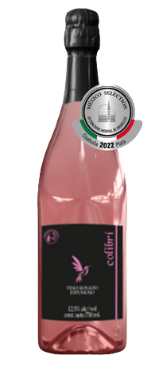

PEDIDOS
Pedido Mínimo de 3 botellas. A elegir de cualquiera de nuestras variedades

Colibrí
$400.00.00
Vino Rosado Espumoso Brut
Cosecha: 2021 Contenido Alcohólico: 12.5% Temperatura de servicio: 5°C
Descripción del Vino:
De color muy sutil parecido a la piel de un durazno, un rosado pálido muy fino y delicado a nuestros ojos.
En nariz se nos presenta una muy buena frutalidad, con recuerdos a frutos amarillos y toques florales potentes y envolventes.
En boca nos entra con una sutileza marcada y muy fina debido a la efervescencia de sus delicadas burbujas, de con una acidez fresca, franca y con un muy buen volumen, su conjunto nos envuelve el paladar con una muy agradable sensación de aterciopelado dejándonos un postgusto largo, fresco y afrutado, resultado de la crianza de 30 días en contacto con sus lías.
Ideal para consumirse en días calurosos acompañado de cocina de mar, paellas, quesos de pasta suave, quesos semi-maduros, pastas, pizza y postres.


Camino a Viñedos Azteca No. 12 Antes Camino Antiguo a Cadereyta Km 40 + 0.4
Carretera San Juan del Río-Cadereyta Ezequiel Montes, Querétaro CP.-76686
© 2023 VIÑEDOS AZTECA S.A. DE C.V. • ALL RIGHTS RESERVED| Diseñado y desarrollado por Grupo 6° cuatrimestre de Diseño Gráfico.